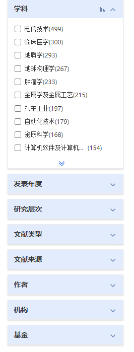

1. elasticsearch go操作简单指北
1.1. 杂谈1：elasticsearch go操作简单指北
本节偏向于杂谈，适用于软院大三后端使用elasticsearch的同学
由于本Ginbook大概也只是面向软件学院初学后端的大二同学。众所周知近年来软院大三的软工2的大作业都是学术共享平台，即针对论文等学术成果进行统一管理的项目。具体要求可能有变化不变透露，不过可以观看我们组的演示视频，引流。而后端上主要则是对海量数据的各种检索，结果聚合。并加以展示。而其中用的最多的便是elasticsearch 了。
凭借着对着elasticsearch 弄了很久，想着以后若不从事相关方面就无用了。便以该学术共享平台的一些操作为例留一点初步操作方法传下去。为后续同学们有一个明确的上手方向吧。
其中elasticsearch所使用的go库为"github.com/olivere/elastic/v7"，版本或有不同，大致原理想必相同。
1.1.1. 数据来源
其中主要是paper数据的来源，这部分我在SlimeScholar-go中介绍了。个人庆幸的是在2021年微软的大而全的microsoft academic graph还在运行中，经过多次与官方发邮件后才获取到Azure的共享并下载。下面是个人使用过的一些建议吧。仅供参考，相信可以满足大多数要求了。值得一提的是开发当时还算火的Readpaper,也是用的MAG数据，相信从id一样上就可以看出来。
OpenAlex将会是未来的第一选择。（MAG已宣布在2021年末停止服务。）
下面推荐几款个人在筛选中觉得还不错的数据（排名按照个人使用情况以及推荐度排序）：
OpenAlex : 或许是MAG 的最好替代品。
SemanticScholar ： 个人觉得非常牛的数据了，（不算mag的话）。唯一的缺点个人觉得就是没有机构以及领域的数据。会议的数据个人觉得还是相对无关紧要的。** 数据每月更新：** 虽然大多优秀的网站都是如此。总数据量大概在2.1亿左右 400G?（2021年11月统计），就连超级全的mag也只有2.6亿。在数据量上可以随便秒杀一大多常规数据了。但也因为以上痛点个人还是最终选择了 mag
此外此网站还有一些比较好用的API在链接处。至于数据源则是在此
OAG2.1：from aminer 但是相对较旧，没有最新一年的数据。但是是微软MAG前几年的版本
scigraph ：看起来还算不错。应该涵盖了大部分的CSpaper
Unpaywall :较优秀的开源数据网站，填写表格即可拿到数据。 解压后大概在130G。不过此时我已有mag便没有过多了解，但是很多数据网站均有提到此网站
最后来一个百家汇，是个列举开源数据网站的网站，虽然以上只有scigraph是我在这里发现的，但是不可否认这个网站还是比较全面的。https://shubhanshu.com/awesome-scholarly-data-analysis/#networks
1.1.2. 数据导入
由于当时MAG给出的格式并不是json，而是基于 分割的字符串。每一行代表一个实体，为了操作方便我首先将其都转化为json格式。（不建议用python，较慢，此处使用Go。
在Go中对于Json数据，我直接将其转化为map[string]interface{},使用bulk 批量插入。个人偏好于每次插入10000条，或是每次操作2-5s的样子。2.6亿的数据插入到服务器中往往还受限于带宽(也可能局限于磁盘IO) ，大概在一整天左右。
bulkRequest := client.Bulk()
{
var m map[string]interface{} = make(map[string]interface{})
err = json.Unmarshal([]byte(json_str), &m)
if err != nil {panic(err)}
doc := elastic.NewBulkIndexRequest().Index(index).Id(m["id"].(string)).Doc(m)
bulkRequest.Add(doc)
}
response, err := bulkRequest.Do(context.Background())
此外，由于elasticsearch的特性，导致多表联查的工作异常困难。考虑到后续还需要进行搜索结果的聚合，因此大多关键数据我都将其整合到Paper实体中。具体各数据参数可参见：MAG, OpenAlex
于是我将 Paper Author Affiliations、 Paper Fields of Study 、Paper Abstracts Inverted Index 使用NewBulkUpdateRequest 来批量更新到Paper中，即通过主键与将论文作者，论文领域、论文及其摘要的关系插入到Paper这张“表”中。让Paper变成一张完整大表。随后已有的搜索便都可以进行了。包括但不限于：按照：篇名、摘要、篇关摘、文献类型、领域、作者、作者机构、文献出版来源、文献Journal来源、文献Conference来源进行搜索。以及初步高级检索。并对每一个的结果进行聚合并筛选操作。
而NewBulkUpdateRequest则是可以根据主键，将当前的各属性，找到不同的屬性添加到被添加的主体中。避免由于数据过大而无法在内存中操作的问题。（不过速度缓慢，上述操作大概三四天的样子）
不过大致遇到困难的时候才会想起来吧
doc := elastic.NewBulkUpdateRequest().Index(index).Id(id).Doc(m).DocAsUpsert(false)
所谓聚合便是类似知网这样的：

1.1.3. 数据检索
为了方便此处简单介绍一下，由于Go中elasticsearch是以对象操作的，相比于python我了解到的则是直接制造es所需要的json格式，由于过于繁琐此处不放出。简单介绍一下下面的字段。
searchResult, err = Client.Search(index).Query(boolQuery).Size(size).TerminateAfter(utils.TERMINATE_AFTER).Aggregation("conference", conference_agg).Aggregation("journal", journal_id_agg).Aggregation("doctype", doc_type_agg).Aggregation("fields", fields_agg).Aggregation("publisher", publisher_agg).Aggregation("min_year", min_year_agg).Aggregation("max_year", max_year_agg).Sort("citation_count", ascending).From((page - 1) * size).Do(context.Background())
for _, hit := range searchResult.Hits.Hits {
paperIds = append(paperIds, hit.Id)
}
- Search(index)： 按照指定的index搜索，例如paper
- Query(boolQuery)，根据指定的查询检索，此处使用的是bool查询，为一个比较高级的查询，大多查询均可被囊括。
- Size(size)：每次返回几个，由于搜索习惯我一般设置为10.即每页返回10个搜索结果。
- TerminateAfter(utils.TERMINATE_AFTER)： 此字段为匹配到多少结果后停止。由于elasticsearch的匹配机制。对于亿级别的大数据可能会匹配到上千万的文档，并对其进行相关度排序。对个人服务器而言优化做的不多当结果到了几千万的时候搜索便会到达10s，算是相当慢的水平了。此处设置匹配到1千万个文档便返回便是为了提高响应速度，又不大的影响结果。
- Aggregation：表示聚合，即根据指定的属性，对相同数值进行聚合操作。即上图所示。具体有许多种聚合此处不一一列举。
- .Sort：按照指定字段排序。
- From 通过from、size即可实现分页查看。
- Do 开始执行，一般为最后一个被调用的。
结果聚合
具体操作可参见SlimeScholar-go 的412行附近。不做赘述。
1.1.4. es服务调优教程推荐
腾讯云大佬讲解，非常多受用之处。
1.2. 总结
大致简单回顾了个人使用elasticsearch的一些操作。不过写的略草。不过是一带而过。希望都是针对一些比较关键的信息，能让你在软工2使用es时有一定帮助。另外在es遇到关键问题也可发issue或联系bflameswift